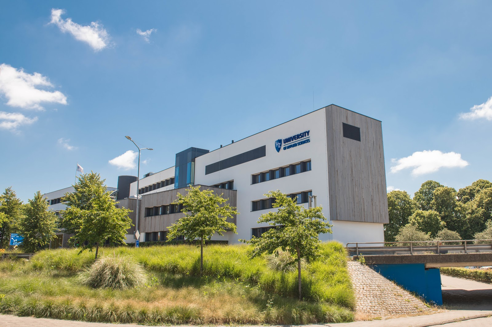

Welcome to my HTML page

Why I have chosen the HBO-ICT programme at HZ?
I am driven by a desire to innovate and create solutions that make a positive impact. HZ HBO-ICT program's focus on fostering innovation and creativity resonates with my goals to contribute to the advancement of technology. HZ University of Applied Sciences will allow me to meet my goals.
My Perspective
HZ HBO-ICT, to me, is not just another educational program—it's a perfect fit for my aspirations and interests. Here's why:
- A Passion for Technology: Since a young age, I've been captivated by the world of technology. HBO-ICT allows me to delve deeper into this passion, providing me with the knowledge and skills to thrive in the ever-evolving tech landscape.
- Problem-Solving Drive: I have a natural inclination for problem-solving and enjoy tackling complex challenges head-on. In the ICT field, I see a realm where I can put these skills to work daily, finding innovative solutions to real-world problems.
- Adaptability: The tech industry's rapid pace of change excites me. HBO-ICT's commitment to staying current with industry trends ensures that I'll always be at the forefront of technological advancements.
- Practical Learning: I learn best by doing, and HBO-ICT's emphasis on hands-on experience through projects and internships aligns perfectly with my learning style.
- Customization: The program's various specializations allow me to tailor my education to my specific interests and career goals, ensuring I'm on the path that suits me best.